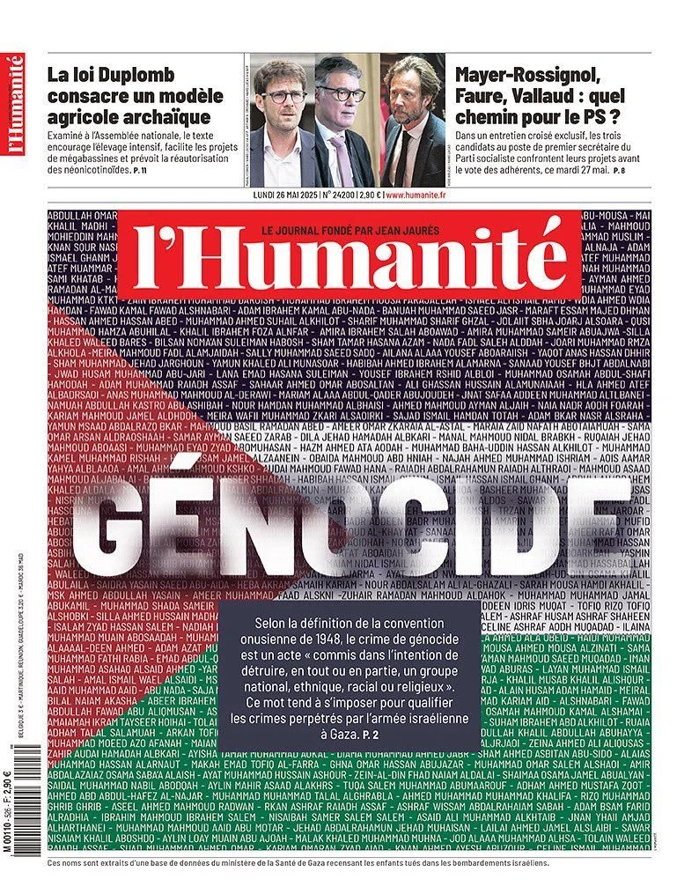

Publication d’archives
La UNE de l'Humanité 26 mai 2025.
Date indiquée par Facebook · 25 mai 2025
Texte conservé avec la publication
Contexte du dossier
Les publications de mai rapprochent l’alerte sur la faim, la dénonciation des crimes et la reconnaissance de l’État de Palestine. Une courte formule parle d’un crime innommable ; un texte plus développé conteste les dénégations et demande des sanctions européennes, notamment sur l’accord d’association avec Israël. La une de L’Humanité annoncée pour le 26 mai emploie le mot « génocide » et met en cause le silence. Une autre légende affirme l’enjeu de la reconnaissance. Chaque trace a sa portée : condamnation, argumentation, titre de presse et revendication diplomatique.

Sources
Archive rouge · export Facebook · AR-0002-FB-01113
À lire aussi · Contrairement aux affirmations du ministre des Armées, la France livre « un flux ininterrompu » d'armes à…